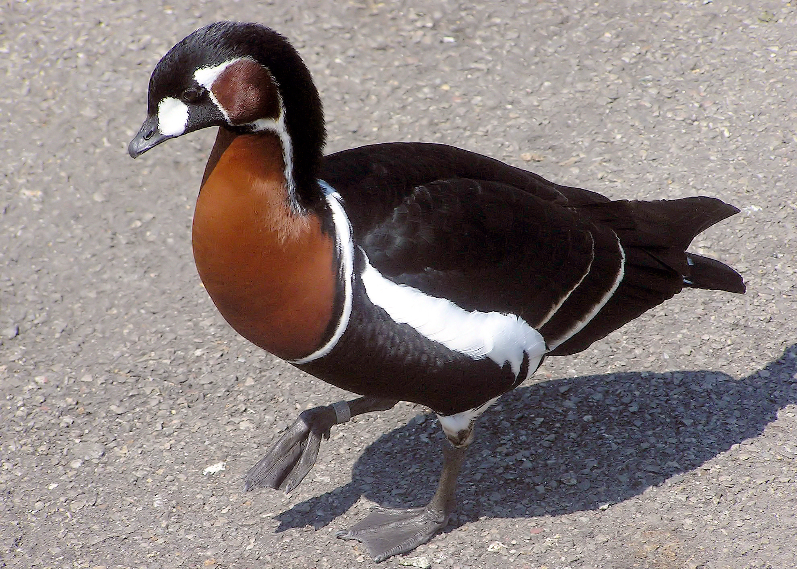

Red-Breasted Goose Arp

The red-breasted goose is sometimes placed in its own genus Rufibrenta but appears close enough to the brant goose (Branta bernicla) to make this unnecessary, despite its distinct appearance. Today all major authorities include the red-breasted goose in Branta. Genetic studies indicate that the red-breasted goose may be one the few known examples of hybrid speciation in birds, being the result of ancient interbreeding between the ancestral Brant goose and white-cheeked goose (the latter being the ancestral species that later split into all today's Branta species, except the brant and red-breasted geese). This interbreeding appears to have happened at least 3.5 million years ago, with the lineage of the red-breasted goose following its own evolutionary path since then.
Fast Facts
- Red-breasted geese are native to rivers, lakes, wetlands and agricultural areas.
- These geese breed in Europe, Asia and Russia and spend the winters along the Black Sea in Bulgaria, Romania and Ukraine .
- Red-breasted geese primarily eat aquatic plants, grasses and grains, though they may also eat crabs and small fish.
- Red-breasted geese are considered “vulnerable” by the IUCN. This migratory bird's population has been declining dramatically, and there are believed to be only 40,000 remaining in their native habitat.